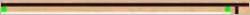
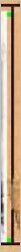

Jorge Furtado


A tal ficha de Dilma, publicada pela Folha de S. Paulo na capa da sua edição de domingo, 5 de abril, é inquestionavelmente uma fraude. Nem é preciso especular se foi feita com máquina elétrica ou não, basta examinar com atenção as distâncias entre as margens da foto e as linhas "impressas" na suposta ficha.
Se fosse autêntica, a foto teria sido colada na ficha. As distâncias entre as margens da foto e as linhas impressas seriam obrigatoriamente irregulares. São perfeitamente paralelas, como só se consegue digitalmente, nunca com papel e cola. Ampliei a imagem e medi, com os instrumentos do Photoshop (provavelmente o programa usado para produzir a fraude). Com toda a ampliação possível, as distâncias entre os cantos superiores esquerdo e direito da foto e a linha impressa são de exatamente três pixels, ou 0,79 milímetros.

Na medida entre a distância da foto e da linha no sentido vertical, maior, a precisão digital se repete.

A distância entre os cantos superior e inferior da foto "colada" e a linha vertical ("impressa") é, adivinhem, de 3 pixels, ou 0,79 milímetros. Repare agora nas diferenças entre as distâncias entre as margens das fotos e as linhas impressas em verdadeiras fichas policiais.
As distâncias entre as margens das fotos (de Monteiro Lobato e de um desconhecido) e das linhas impressas na ficha (ou datilografadas, no caso de Lobato) variam muito.
O mais curioso: na capa da edição de 5 de abril da FSP, o diagramador teve o cuidado de inclinar a ficha, dando-lhe um aspecto de fac-símile, de fotografia tirada de um original de papel, como se o "fotógrafo" (que nunca existiu) não tivesse conseguido, como é normal acontecer, deixar as linhas no nível horizontal correto.
A manipulação era tão evidente que o jornal não teve como não publicar um "erramos". Só que a Folha errou no "erramos":
"O primeiro erro foi afirmar na primeira página que a origem da ficha era o 'arquivo [do] Dops'. Na verdade, o jornal recebeu a imagem por e-mail. O segundo erro foi tratar como autêntica uma ficha cuja autenticidade, pelas informações hoje disponíveis, não pode ser assegurada – bem como não pode ser descartada."
Não é verdade. A autenticidade da ficha pode ser descartada sem sombra de dúvida. Já o fato do jornal admitir ter publicado em sua capa da edição de domingo um suposto documento de fonte desconhecida é tão vergonhoso que chega a dar pena.
Tudo leva a crer que a Folha de S. Paulo fez de tudo para dar ares de veracidade ao que sabia ser uma fraude. Não seria a primeira vez. (A Folha publicou como verdadeiras as declarações do delegado Edmilson Pereira Bruno - aquele que prendeu os "aloprados" - que sabia serem falsas.) Quando publica como verdade aquilo que sabe que é mentira, um jornal deixa de ter qualquer utilidade.
Jorge Furtado
29.04.09
*****
Para mais detalhes sobre a fraude da ficha ver:
Do Blog de Luis Nassif: Dilma e o mistério da máquina elétrica
Do Observatório da Imprensa: Quando o "erramos" pretende encobrir a fraude

ok! mas... e aí?!... na boa, não leiam a "folha"... a tal "folha" que é tudo. não leiam jornais. não creiam em jornais. não creiam no jornalizzmo. morô?! hahahaha....
A Grande Mídia agoniza. Viva a Mídia Livre! Enquanto os jornalões e revistas semanais apostaram na oposição cega e vêm perdendo lucratividade e tiragem, a investigação, opinião e análise sérias estão nos blogs e veículos alternativos. Leia o texto completo em Brasil de Fato.
grupo: cheguei aqui pelo meu amigo onipresente.a fsp do herdeiro otavinho é lixo arrematado. romério
A única verdade que podemos extrair disso tudo é que esse pasquim está a serviço da candidatura Serra.
Estão falando muito sobre o "sofá da sala" e esquecendo do fato mais importante: a Dilma REALMENTE fez parte de um grupo terrorista. Esse grupo não queria lutar pela democracia e, sim, pela implantação de um modelo comunista.
Nem precisa muito, photoshop ou o escambau, pra ver que é fraude. Na letra 'i' quando acentuada em máquina de escrever dá pra ver que o pingo do i junto com o acento. Na ficha da Dilma, veja por exemplo a palavra política. Não tem pingo com o acento.
E que impressão digital mais redondinha...
Outro coisa fora do aspecto gráfico que se pode notar a fraude é a terminologia "terrorista", naquela época ainda não se usava este tipo de terminologia comumente. O terrorismo veio a crescer a partir da década de 80, foi a partir daí que a imprensa começou a usar o termo massificadamente. A pessoa que fraudou o documento, claro, queria colar em Dilma o conceito de terrorista.
Vamos combinar o seguinte: doravante não se fala mais em erro. As palavras corretas a serem empregadas para melhor definir as ações da Folha são: dolo, má fé, fraude, crime e delito. Usar a palavra "erro" é beneficiar o criminoso, no caso a Folha. Não é possível tratar e caracterizar o que a Folha vem fazendo como erro, engano, descuido etc.
O Brasil vive perdendo oportunidades de mostrar um pouco a sua cara. O que, afinal, seria necessário para que a Folha abrisse o jogo e dissesse com todas as letras o que aconteceu? Por trás disso viria uma imensa corrente de fatos, culpas e interesses que acabariam por nos dar um rumo mais nobre. Inclusive com denúncias sobre personagens que possam incomodar a Folha, a Veja, a Globo e quem mais quer que seja. O que não é aceitável é assistir a este silêncio conivente da mídia com este estado de coisas, como se ela não tivesse responsabilidades com a história e o futuro do país. O que não é admissível é que um veículo da importância de uma Folha, de uma Veja, de uma Globo se deixem mancomunar com coisas tão baixas, tão primárias...
ou, então, façamos uma crítica ao photoshop?! ou a própria fotografia?! alguém aqui acredita, "realmente" em fotografia como uma re-apresentação do real?!!!!!